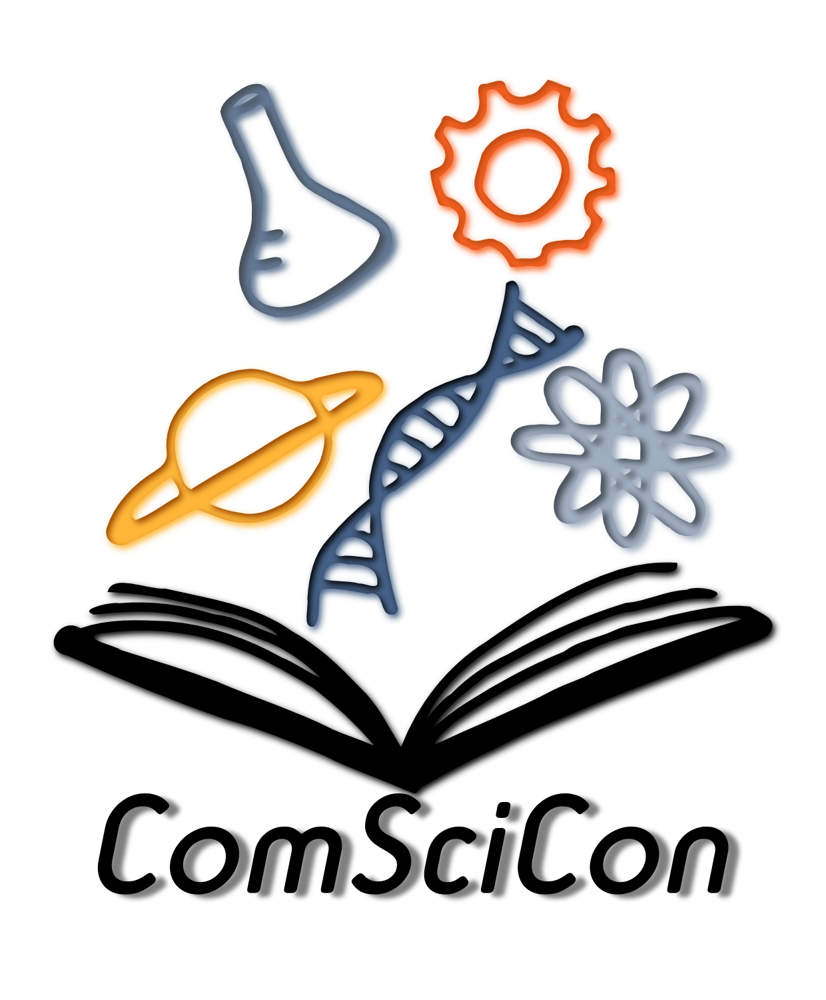

SciComm
Communicating Empirical Research to the Public
ComSciCon-Virginia Tech
I spearheaded the efforts to organize Virginia Tech's first local ComSciCon, a national franchise of a communicating science conference created by graduate students. The conference took place on March 7 and 8, 2019, in the Graduate Life Center. Co-sponsored by the Center for Communicating Science and the Global Change Center, ComSciCon-Virginia Tech included workshops and panels from Virginia Tech professors, science journalists and editors, science authors, librarians, and former Nutshell Games winners. (See more about Nutshell Games below.)
Information about the full workshop schedule and the application form are available on the Center for Communicating Science website. We accepted 60 applicants from graduate and advanced undergraduate students with an interest in science communication.
Nutshell Games Talk
In October 2018, I presented a talk about my dissertation research in under 90 seconds for the Nutshell Games, a speaking competition hosted by the Center for Communicating Science at Virginia Tech.
Preparing for the Nutshell Games
 About a week and a half before the competition, I attended a workshop designed to help participants prepare to condense their research into a 90-second snippet that public audiences could understand. A story featuring a picture of me and fellow participants was published in the VT News.
About a week and a half before the competition, I attended a workshop designed to help participants prepare to condense their research into a 90-second snippet that public audiences could understand. A story featuring a picture of me and fellow participants was published in the VT News.
Science on Tap
Science on Tap is an awesome, ongoing series of events in the Blacksburg, VA area where scientists communicate their research to the public. My husband, my dog, and I attended a presentation on dog behavior in which Boris, our beagle-Australian shepherd mix, got to participate! Here's an excerpt from a Roanoke Times article by Robby Korth, who interviewed me about the event:
For those in attendance, the event delivers important exposure to scientific research. Allison Hutchison, a graduate student in Tech’s English department, attended the event with her husband and dog Boris, who was given some lessons on canine behavior.She brought students from a science writing course she taught last semester to a Science on Tap event. For the general public, combining beer with learning will lead to good times, she said.
“This is an event people need to open their Thursdays up to,” Hutchison said. “Science can be fun.”